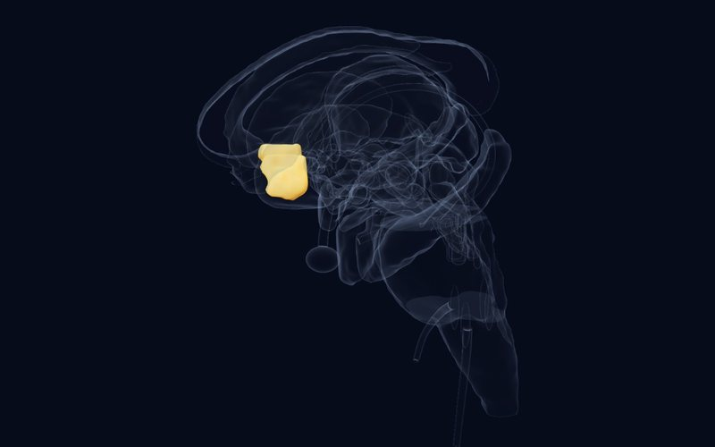
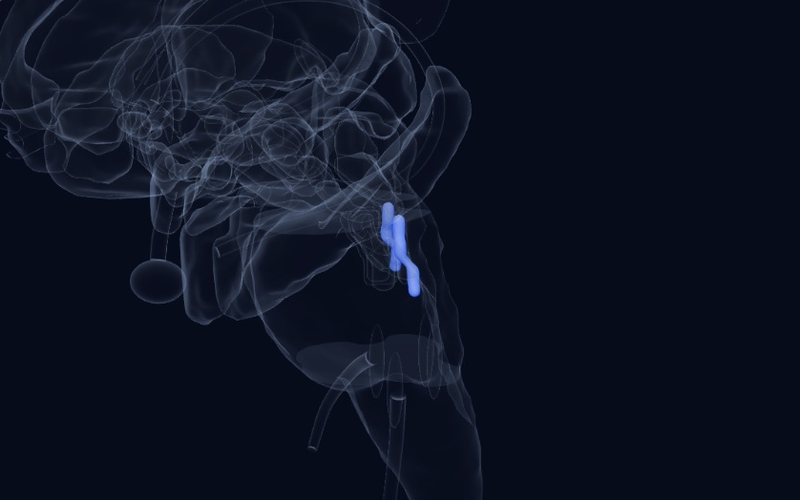

Boletín · Edición 4 · 30 de octubre de 2026
El momento de la crisis, la ayuda rápida y los circuitos de la soledad
Esta edición examina tres caras de la crisis emocional en la adolescencia: cómo se puede ayudar fuera del hospital a un joven en crisis suicida, un método de estimulación cerebral que actúa en dos semanas en la depresión, y cómo la frustración altera el aprendizaje de recompensa en jóvenes irritables. En el apartado de neurociencia, un circuito explica por qué la soledad puede aumentar tanto la ansiedad como el impulso de buscar a los demás.
Los estudios de esta semana
BRevisión sistemática, metaanálisisCurrent Psychiatry Reports2026
Ayudar fuera del hospital a jóvenes en crisis suicida: ¿funcionan bien los servicios de crisis?
15 estudios, 15 intervenciones en crisis
DetallesCerrar
 Atlas
Atlas
Hallazgo
Se revisaron quince estudios que evaluaban 15 intervenciones en crisis para niños y adolescentes en crisis aguda por depresión grave, ideación suicida o autolesiones. Cuatro intervenciones breves y estructuradas redujeron los pensamientos suicidas, los intentos de suicidio y las visitas a urgencias. Siete intervenciones centradas en la familia fortalecieron la comunicación y la cohesión familiares y redujeron los ingresos hospitalarios; tres que vinculaban a los jóvenes con servicios comunitarios mejoraron la continuidad de cuidados.
Por qué es importante
El apoyo intensivo en el propio entorno del joven, con implicación de la familia, puede ser una alternativa prometedora al ingreso en algunos casos. Muestra una vez más hasta qué punto es decisivo el papel de la familia en el momento de la crisis.
Limitación
La evidencia es en gran medida observacional y heterogénea; como señalan los autores, no pueden extraerse conclusiones causales.
Díaz-Téllez C, Peñuelas-Calvo I, Alacreu-Crespo A, et al. Crisis Interventions for Children and Adolescents with Depression and Suicidality: A Systematic Review and Meta-Analysis. Current Psychiatry Reports. 2026. doi:10.1007/s11920-026-01722-z
CEnsayo controlado aleatorizadoBMC Psychiatry2026
Diez días de estimulación cerebral en la depresión adolescente: un efecto rápido que dura un mes
61 adolescentes con depresión mayor aguda (iTBS de dosis alta o simulación)
DetallesCerrar
 Atlas
Atlas
Hallazgo
Sesenta y un adolescentes con depresión aguda fueron aleatorizados a una sesión diaria de estimulación theta burst intermitente (iTBS) de dosis alta o a estimulación simulada sobre la corteza prefrontal dorsolateral izquierda durante dos semanas. Al final de los diez días, las puntuaciones de depresión (HAMD-24; d = 0.71) y de ideación suicida (d = 0.67) fueron significativamente más bajas en el grupo de iTBS que en el de simulación. La diferencia persistió un mes después (d = 0.96 y 0.76); las puntuaciones de ansiedad no difirieron entre los grupos. Los adolescentes con peor funcionamiento familiar se beneficiaron menos.
Por qué es importante
Aporta datos controlados sobre una opción no farmacológica de acción rápida en adolescentes y se corresponde directamente con la diana de EMT en la CPFDL izquierda de la lente de depresión del atlas. El hallazgo sobre el funcionamiento familiar apunta en la misma dirección que el primer estudio.
Limitación
Un ensayo unicéntrico, pequeño y simple ciego; el ensayo se registró de forma retrospectiva.
Yang Y, Ye Q, Peng Z, et al. Rapid and robust effects of high-dose intermittent Transcranial Brain Stimulation (iTBS) on depression and suicidal ideation in adolescents with acute major depression: a 10-day randomised, controlled, single-blind trial. BMC Psychiatry. 2026. doi:10.1186/s12888-026-08452-9
CEstudio transversal, estudio experimentalBiological Psychiatry: Cognitive Neuroscience and Neuroimaging2026
La frustración invierte la señal de recompensa en el cerebro de jóvenes irritables
88 jóvenes (edad media 14.4; 49% mujeres)
DetallesCerrar

Atlas
Hallazgo
Ochenta y ocho jóvenes con distintos niveles de irritabilidad realizaron una tarea de aprendizaje probabilístico de recompensa adaptada a niños durante fMRI; el error de predicción de recompensa de cada ensayo se derivó con un modelo de aprendizaje por refuerzo. Antes de inducir la frustración, una mayor irritabilidad se asociaba con un acoplamiento más fuerte entre los errores de predicción de recompensa y la actividad del estriado ventral y el globo pálido. Tras la frustración, el patrón se invirtió: en los jóvenes irritables, los resultados de recompensa se codificaron con menos fuerza en el estriado ventral, el globo pálido y la ínsula derecha. No se encontró asociación en la corteza orbitofrontal ni en la ínsula izquierda.
Por qué es importante
El primer estudio que muestra la irritabilidad como una alteración del aprendizaje de recompensa dependiente del estado: el problema puede residir no solo en la ira, sino en que el aprendizaje se detiene en el momento de la frustración. Sugiere una diana para las intervenciones dirigidas a la reactividad a la frustración.
Limitación
Una sola tarea y una única sesión de inducción de frustración; se desconoce en qué medida los hallazgos reflejan la irritabilidad en la vida diaria.
Korom M, Burk D, Givens T, et al. Frustration Induction Alters Reward Prediction Error Encoding in Pediatric Irritability. Biological Psychiatry: Cognitive Neuroscience and Neuroimaging. 2026. doi:10.1016/j.bpsc.2026.10.005
CEstudio animalNeuron2026
La paradoja de la soledad: un circuito que aumenta tanto la ansiedad como el impulso hacia los demás
Ratones macho adultos
DetallesCerrar
 Atlas
Atlas
Hallazgo
Los investigadores construyeron un modelo de "déficit social comparativo" en ratones macho adultos; de forma muy similar a la soledad humana, aumentó tanto la conducta de tipo ansioso como la preferencia social. Las neuronas GABA del área preóptica medial se volvieron hiperexcitables por la pérdida del canal de potasio Kv4.3, y modificar la actividad de estas neuronas desplazó la conducta en ambas direcciones. Estas neuronas inhiben directamente las neuronas serotoninérgicas del rafe dorsal; esta vía inhibidora, reforzada por el déficit social, medió los cambios conductuales.
Por qué es importante
Ofrece un circuito causal entre el hipotálamo y el sistema serotoninérgico para el patrón aparentemente contradictorio de la soledad: sentir ansiedad a la vez que se busca más a los demás. Apunta a por qué la desconexión social es un factor de riesgo tan potente para los trastornos de ansiedad.
Limitación
Un modelo animal solo en ratones macho; no puede trasladarse directamente a la soledad humana.
Zhang YY, Hu MT, Xie SZ, et al. A GABAergic preoptic-raphe circuit mediates paradoxical coupling of anxiety and social preference after comparative social deficit. Neuron. 2026. doi:10.1016/j.neuron.2026.09.032
Estructura de la semana

Tronco del encéfalo
Locus Coeruleus
La principal fuente de noradrenalina del cerebro: modula la vigilia, la atención y la respuesta al estrés; un pequeño núcleo que alcanza casi todo el cerebro.
Una pregunta para los lectores
Acompañar a un joven en crisis recae a menudo en la familia; en el lugar donde usted trabaja, ¿existe una estructura que prepare a las familias para una crisis y las acompañe después?
Puede enviar su respuesta por correo electrónico:
hello@thefoldedmind.comReferencias
- Díaz-Téllez C, Peñuelas-Calvo I, Alacreu-Crespo A, et al. Crisis Interventions for Children and Adolescents with Depression and Suicidality: A Systematic Review and Meta-Analysis. Current Psychiatry Reports. 2026. doi:10.1007/s11920-026-01722-z
- Yang Y, Ye Q, Peng Z, et al. Rapid and robust effects of high-dose intermittent Transcranial Brain Stimulation (iTBS) on depression and suicidal ideation in adolescents with acute major depression: a 10-day randomised, controlled, single-blind trial. BMC Psychiatry. 2026. doi:10.1186/s12888-026-08452-9
- Korom M, Burk D, Givens T, et al. Frustration Induction Alters Reward Prediction Error Encoding in Pediatric Irritability. Biological Psychiatry: Cognitive Neuroscience and Neuroimaging. 2026. doi:10.1016/j.bpsc.2026.10.005
- Zhang YY, Hu MT, Xie SZ, et al. A GABAergic preoptic-raphe circuit mediates paradoxical coupling of anxiety and social preference after comparative social deficit. Neuron. 2026. doi:10.1016/j.neuron.2026.09.032
Este boletín tiene fines educativos y no constituye consejo médico; consulte a su médico para las decisiones de diagnóstico y tratamiento. Los resúmenes están escritos con nuestras propias palabras a partir de los resúmenes de los estudios y de los textos completos de acceso abierto; consulte el artículo original para los detalles y los resultados definitivos.
Nivel de evidencia (como en el atlas): A consorcio amplio, metaanálisis o decisión regulatoria; B estudios replicados o caso clásico; C estudio único o pionero. Las prepublicaciones no han sido revisadas por pares.